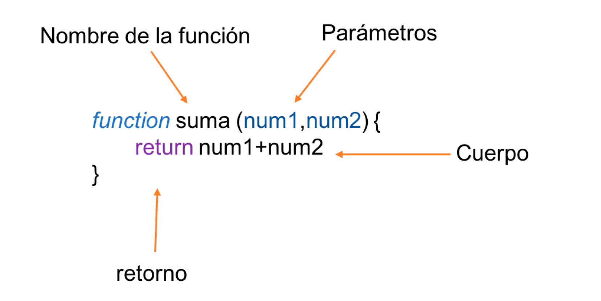

La estructura de una función se compone de cuatro elementos básicos: nombre, argumentos, parámetros, cuerpo y retorno. Por ejemplo, una función para realizar la suma de dos valores y retornar un resultado sería:
A continuación, en la tabla, podrás ver en detalle cada elemento:
| nombre | Es el identificador de la función, este no puede comenzar con un número ni contener espacios, es decir, corresponde a una sola palabra tal como un nombre de variable. Es importante que este nombre sea representativo de lo que hace la función, además dentro del alcance (scope) de la misma. |
|---|---|
| argumento1, argumento2, … (opcional) | Son los valores que le pasamos a la función cuando se realiza la llamada. Estos valores no son obligatorios. Sólo se envían en el caso de tener en la función los parámetros necesarios para recibir los argumentos. |
| parametro1, parametro2, … (opcional) | Corresponden a los nombres de variable que necesita la función para trabajar y representan las entradas o parámetros de la función. Este campo NO es obligatorio, es decir, existen funciones que no requieren parámetros para ejecutarse de manera correcta. |
| operaciones | Bloque de código que agrupa una función, puede ser tan simple o completa como se necesite e incluso se pueden hacer llamadas a otras funciones. |
| return resultado; (opcional) | El retorno de la función, si bien no es de carácter obligatorio, se sugiere retornar siempre algo para indicar la correcta ejecución del programa (un true o false por ejemplo). Este valor de resultado puede ser de cualquier tipo de dato ya sea constante o variable. |